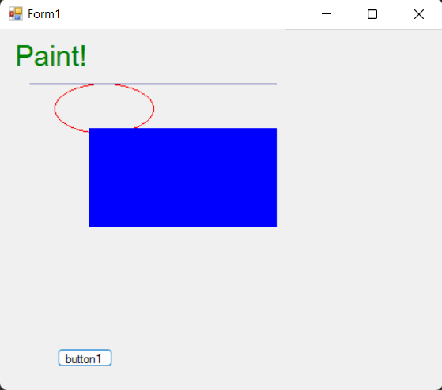
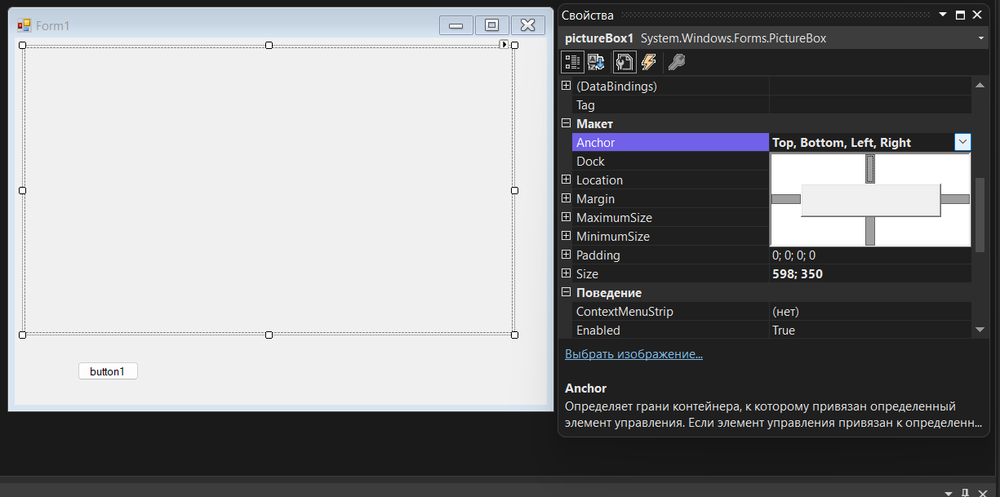
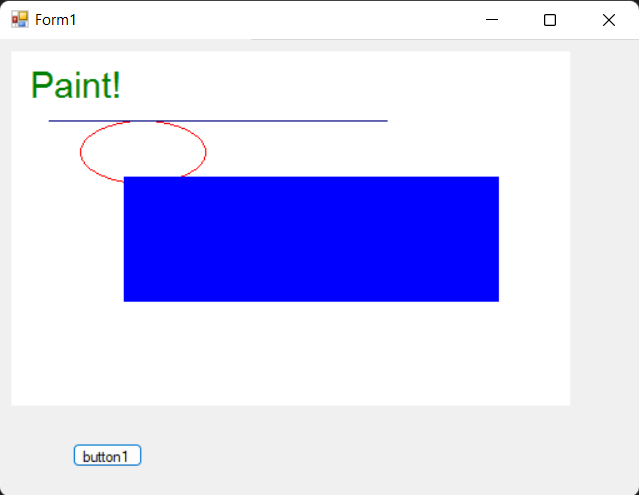
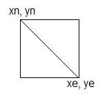

Здесь мы на примере рассмотрим, графические возможности языка C#.
Создадим новый проект и на форме установим кнопку (button).
Двойным щелчком на кнопке создадим событие и допишем несколько строк рисования непосредственно на форме:
private void button1_Click(object sender, EventArgs e) {
Graphics gr; // Создаём переменную gr типа Graphics (холст для рисования)
gr = this.CreateGraphics(); // Инициализируем созданную переменную
Pen MyPen; // Создаем карандш
MyPen типа Pen MyPen = new Pen(Color.Red); // Нашему карандашу присваиваем красный цвет
gr.DrawEllipse(MyPen, 55, 55, 100, 50);//Рисуем эллипс красным цветом
MyPen = new Pen(Color.Navy); //Присваиваем карандашу тёмносиний цвет
gr.DrawLine(MyPen, 30, 55,300, 55); //Рисуем линию тёмносиним цветом
gr.FillRectangle(Brushes.Blue, 90, 100, 300, 100); //Рисуем залитый синей краской прямоугольник
gr.DrawString("Paint!", new Font("Arial", 22),new SolidBrush(Color.Green), 10, 10); //Выводим надпись Paint! На экран зелёным цветом
}
На форме появился рисунок. Попробуем изменить размер формы в ширину примерно наполовину, а потом восстановим ширину формы до исходной. Видно, что рисунок на форме пропадает.

Рисунок так же будет пропадать, если свернуть, а затем развернуть форму или перекрыть форму окном другой программы. Перерисовывать каждый раз форму можно если создать событие Pain для формы и прописать в нём все графические функции, которые мы записали
для события нажатия кнопки Button1. Это не очень хорошее решение, особенно тогда, когда рисунок будет изменяться динамически в процессе работы программы.
Можно использовать другой способ, который заключается в том, чтобы установить на форме объект pictureBox1 (контейнер картинок), создать виртуальный графический лист Bitmap, на котором будут храниться рисунки, и при любых изменениях
формы лист будет копироваться на pictureBox1. Расположим объект pictureBox1 на форме и якорем (Ancor) зададим привязку pictureBox1 со всех сторон, так, что бы pictureBox1 изменял свои размеры синхронно с изменением размеров формы.

public partial class Form1 : Form
{
// Объявляем глобальные переменные
// Объявляем переменную виртуальный лист mbit типа Bitmap
Bitmap mbit;
// Объявляем переменную gr типа Graphics
Graphics gr;
public Form1()
{
InitializeComponent();
}
private void button1_Click(object sender, EventArgs e)
{
// Инициализируем объявленные глобальные переменные
mbit = new Bitmap(pictureBox1.Width, pictureBox1.Height);
gr = Graphics.FromImage(mbit);
// Далее, прорисовываем на виртуальном листе нужные элементы
gr.FillRectangle(Brushes.White, 0, 0, pictureBox1.Width - 1, pictureBox1.Height - 1);
Pen MyPen = new Pen(Color.Red);
gr.DrawEllipse(MyPen, 55, 55, 100, 50);
MyPen = new Pen(Color.Navy);
gr.DrawLine(MyPen, 30, 55, 300, 55);
gr.FillRectangle(Brushes.Blue, 90, 100, 300, 100);
gr.DrawString("Paint!", new Font("Arial", 22), new SolidBrush(Color.Green), 10, 10);
// Копируем виртуальный лист с рисунком на лист pictureBox1
pictureBox1.Image = mbit;
}
}
Теперь если запустить приложение и нажать кнопку Button1 то получим такую картинку:

Теперь можно смело изменять размер формы, сворачивать и разворачивать, перекрывать другими окнами - картинка никуда не пропадает. Рассмотрим функции рисования и параметры, передаваемые этим функциям. Для обозначения координат введём следующие обозначения:
xn, yn - начальные координаты примитива, xe,ye - конечные координаты примитива.

Рисование линии:
gr.DrawLine(Pen, xn, yn, xe, ye);
Рисование прямоугольника:
gr.DrawRectangle(Pen, xn, yn, xe, ye);
Рисование эллипса (эллипс рисуется внутри виртуального прямоугольника):
gr.DrawEllipse(Pen, xn, yn, xe, ye );
Для рисоания залитых прямоугольника и эллипса используются следующие функции:
gr.FillRectangle(Brushes.Blue, xn, yn, xe, ye); - прямоугольник
gr.FillEllipse(Brushes.Blue, xn, yn, xe, ye); - эллипс
Параметр Brushes (кисти) задаёт цвет заливки фигуры:
Black - чёрный
Maroon - бордовый
Green - зелёный
Olive - оливковый
Navy - темно-синий
Purple - пурпурный
Lime - лимонный
Teal - морской воды
Gray - серый
Silver - светло-серый
Red - красный
Blue - синий
Yellow - жёлтый
Fuchsia - сиреневый
Aqua - голубой
White - белый